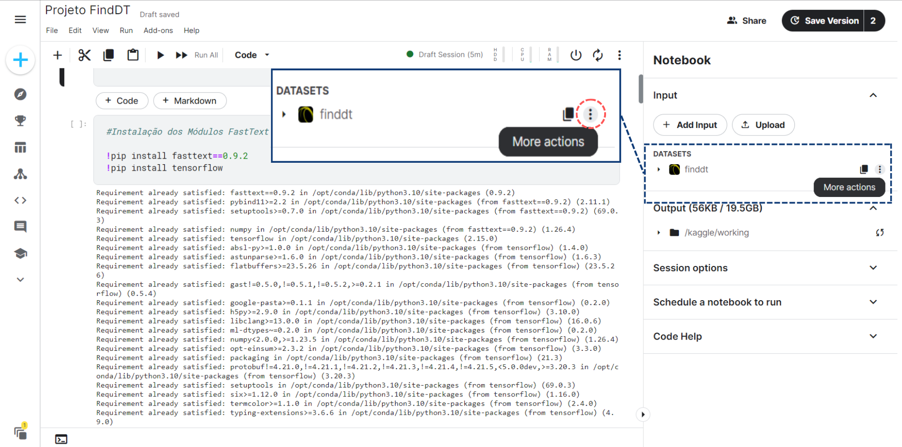
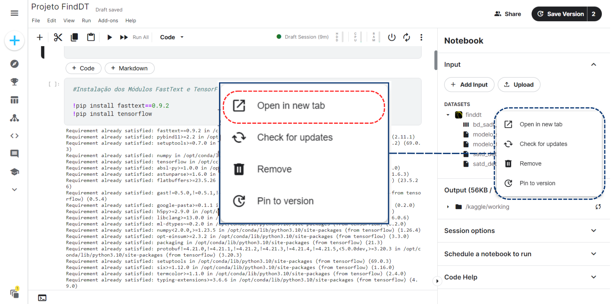
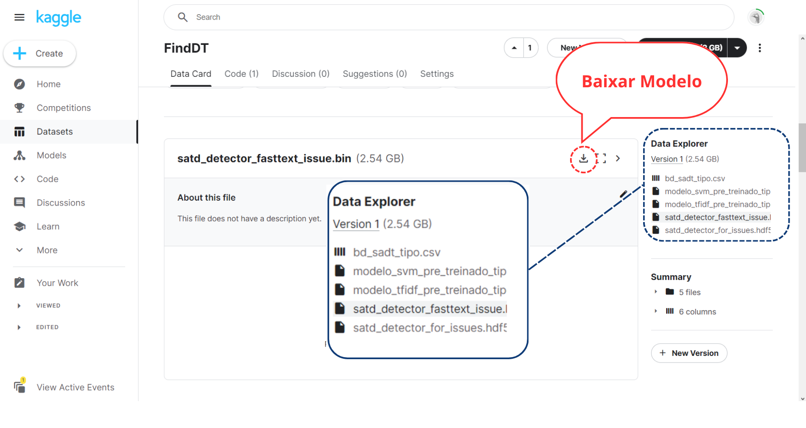

 1 Abra a Ferramenta no Kaggle Realizados os Passos 1 a 3 de Como Usar , passe o mouse em cima do local indicado e selecione os 3 pontinhos!
 2 Abre o Dataset em Outra Guia Após selecionar os 3 pontinhos aparecerá uma lista, selecione a primeira opção "Open in New tab", ela irá abrir o dataset e suas informações.
 3 CLique para baixar Após a abertura navegue o conteúdo mais abaixo utilizando o recurso de rolagem até a área indicada, a direita teremos os dados salvos no Dataset, selecione o desejado e clique para baixar no local indicado.